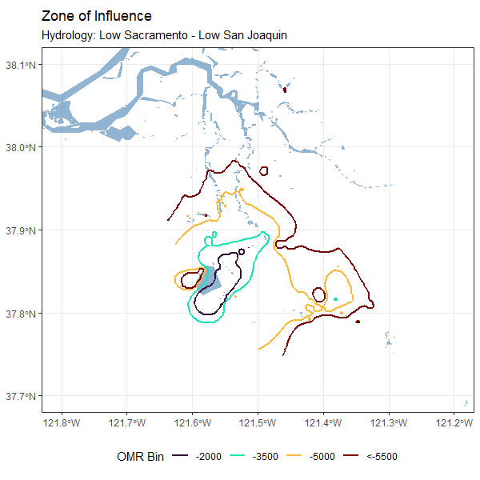
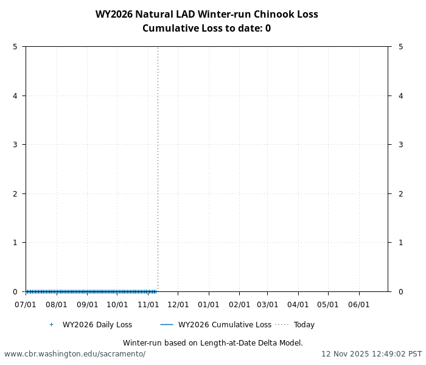
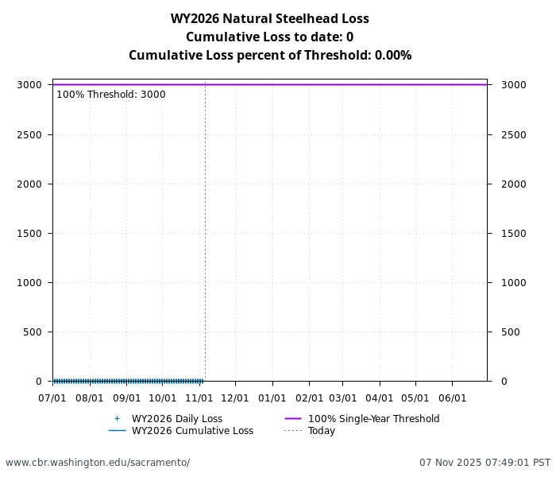

| Species | Red Bluff Diversion Dam | Tisdale RST | Knights Landing RST | Sac Trawl (Sherwood) | Chipps Island Trawl | Salvage |
|---|---|---|---|---|---|---|
| Chinook, LAD Winter-run, Unclipped | 79.2% | 16.7% | 16.1% | 6.5% | 0.9% | 0.0% |
| Chinook, DNA Winter-run, Unclipped (Water Year) | 0.0% |
Summary of CVP and SWP delta operations on salmonids (as of November 04, 2025)
BDO Science Division, Data is preliminary and subject to change
DCC gates are currently closed and is the controlling factor. Gates will continue to operate in accordance to Table 3-6 in the Proposed Action.
Winter-run
Winter-run catch is high at delta entry monitoring locations. No loss has yet to occur at export facilities.
Central Valley Steelhead
Central Valley Steelhead catch is low and no loss has yet to occur at export facilities.
Operational and Regulatory Conditions
DCC gates are the current controlling factor. See most recent weekly outlook for more information.
Current Conditions
Current inflow at Freeport in the Sacramento River and Vernalis in the San Joaquin River is xx and xx. Most recent 5-day and 10-day OMRI measurements were xx and xx respectively, and most recent export data were xx for Jones Pumping Plant and xx for Henry O. Banks Pumping Plant.
Zone of Influence
Current conditions at Freeport and Vernalis indicate that delta hydrology falls within the ‘lolo’ category (see appendix for hydrology bin definitions). This category is characterized by significant sensitivity in the zone of influence to changes in OMRI, where the zone of influence expands more greatly than wetter hydrologies as OMRI becomes more negative.

Current Status
Give update on migration, salvage, monitoring, and STARs patterns.
Historically, as of Nov 03, 16.1% of length-at-date (LAD) winter-run have entered the delta based on Knights Landing RST catch, 0.9% have exited the delta based on Chipps Island Trawl Catch, and 0.0% of DNA confirmed winter-run have been salvaged.
Annual Loss
Cumulative loss as of x.date is xx and is xx% of thresholds.

STARs
DCC Gate Closures
Early Season Migration
Early season migration thresholds have not been triggered.
Current Status
Give update on migration, salvage, monitoring, and telemetry findings.
As of Sys.Date() 500,000 hatchery winter-run have been released into the Sacramento River on February 15, 2025 and 50,0000 have been realed into Battle Creek on March 21, 2026. JPEs are 80,000 and 10,000 for the respective releases with annual loss thresholds of 150 fish for the Sacramento Release and 10 fish for the Battle Creek Release.
Current Status
Give update on migration, salvage, monitoring of clipped and unclipped steelhead.
Historically, as of Nov 03, 0% of CCV steelhead have entered the delta based on Knights Landing RST catch, 0% have exited the delta based on Chipps Island Trawl Catch, and 0.3% have been salvaged.
| Species | Red Bluff Diversion Dam | Tisdale RST | Knights Landing RST | Sac Trawl (Sherwood) | Chipps Island Trawl | Salvage |
|---|---|---|---|---|---|---|
| Steelhead, Unclipped | NA | NA | NA | NA | NA | 0.3% |
Annual Loss
Cumulative loss as of x.date is xx and is xx% of thresholds.
